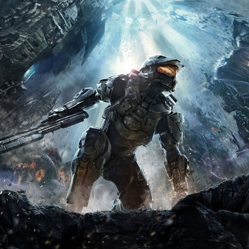
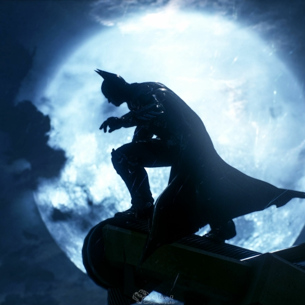

Halo

Minha série favorita de jogos é Halo, jogo desde o Xbox 360 e adoro ela, curto a idéia que ela traz de uma cruzada espacial que os humanos tentam desesperadamente sobreviver e acabaram criando um projeto para desenvolver supersoldados (o protagonista é um deles), inteligencias artificias para os auxiliar e claro, a relação do protagonista com a que ele utiliza.
Hitman

Outra série de jogos que eu gosto é Hitman, nela a gente controla um assasino e mata os alvos usando disfarçes para entrar em lugares, buscando Informações, causando acidentes e etc, tambem é divertido devido a possibilidade de fazer coisas novas cada vez que você joga.
Batman: Arkham Knigth

Esse jogo é legal por que tem muito conteudo no mundo aberto e apretechos que facilitam a movimentação, traz uma gameplay divertida e a parte principal, o combate é bem fluido e intuitivo e com possibilidade de realizar combos de golpes, derrubar vários inimigos de uma vez ou até mesmo indo silenciosamente sem ninguem te perceber para cumprir as missões